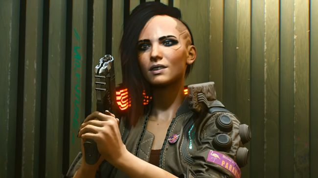
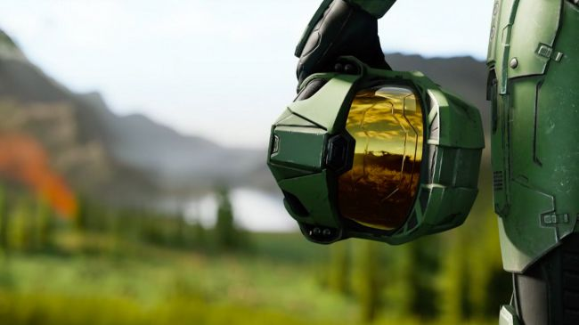
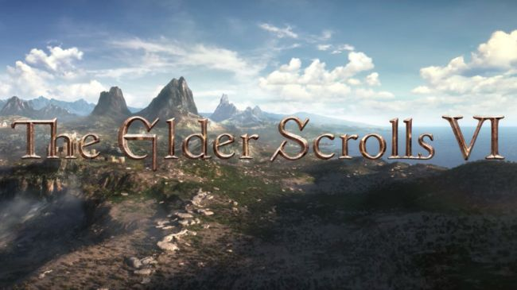
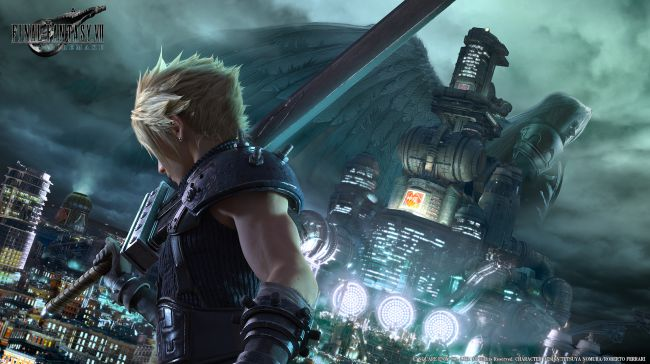

Biggest Releases comming soon
Cyberpunk 2077
 Release date: TBCCD Projekt Red has given us some absolutely ravishing teases of the futuristic Night City, and until we get to play it for ourselves, we'll be poring over every trailer and screenshot in search of new details. As a customizable protagonist, you'll explore a dense metropolis from the first-person perspective - a departure for the studio that initially sent some Witcher fans in a tizzy. They'll get over it when they dive into Cyberpunk 2077's grungy world of high-tech weaponry and digital espionage.
Halo Infinite
 Release date: TBAMake no mistake; 343 Industries' follow-up to 2015's Halo 5 is still a long way off, but it's definitely happening. Bearing a curious new sub-header and running on a brand new game engine known as Slipspace, Halo: Infinite's first trailer almost seems to suggest that Master Chief's next adventure will have MMO qualities to it, or at least be more open-ended and sandbox-like in flavour. That instantly familiar shot of his armour also teases an earlier timeline for everyone's favourite Spartan, though plot details remain threadbare for now. MMO or otherwise, Halo: Infinite could just be the Halo comeback we've all been waiting for.
The Elder Scrolls 6
 Release date: TBAAfter years of prevaricating, party pooping, and a preposterous number of Skyrim re-releases, Bethesda came out at E3 2018 to finally confirm that The Elder Scrolls 6 is officially on the way, even releasing a short but exciting teaser trailer to prove it. That trailer in question doesn't reveal a whole lot, but suggests a number of potential settings for the long awaited sequel, from the long forgotten High Rock to the lost island of Yokuda. Sadly, this RPG is likely to stay in production for quite some time, but the more hopeful adventurers wouldn't be completely mad for expecting The Elder Scrolls 6 to release before the end of the decade. Fingers crossed.
Final Fantasy 7 Remake
 Release date: TBCYou've wanted it so badly, and eventually, you're going to get it. Fans had been pining for the seminal RPG Final Fantasy 7 to be remade with slick modern visuals, and at E3 2015, Square-Enix finally obliged with a glorious glimpse at Cloud Strife's big comeback. We've since learned plenty about Final Fantasy 7 Remake, like the fact that it's planned to be split up along full-game-sized episodes, and features action-heavy real-time combat in the same vein as Final Fantasy 15.